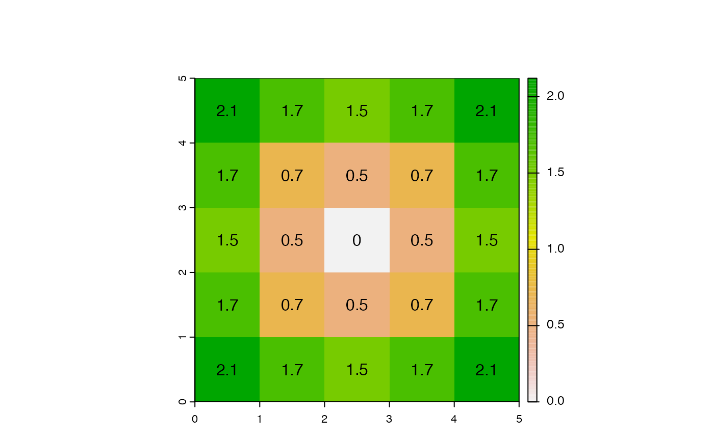
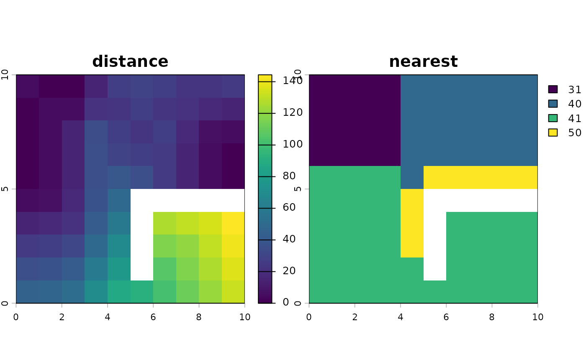

costDist.RdUse a friction (cost) surface to compute the cost-distance from any cell to the border of one or more target cells.
Distances are computed by summing local distances between cells, which are connected with their neighbors in 8 directions, and assuming that the path has to go through the centers of one of the neighboring raster cells.
Distances are multiplied with the friction, thus to get the cost-distance, the friction surface must express the cost per unit distance (speed) of travel.
# S4 method for class 'SpatRaster'
costDist(x, target=0, scale=1, maxiter=50, nearest=FALSE, filename="", ...)SpatRaster
numeric. value of the target cells (where to compute cost-distance to)
numeric. Scale factor. The cost distance is divided by this number
numeric. The maximum number of iterations. Increase this number if you get the warning that costDistance did not converge
logical. If TRUE, a second layer is returned with the cell number of the nearest target cell
character. output filename (optional)
additional arguments as for writeRaster
SpatRaster. If nearest=TRUE, a two-layer SpatRaster with the cost-distance in the first layer and the cell number of the nearest target in the second layer
r <- rast(ncols=5, nrows=5, crs="+proj=utm +zone=1 +datum=WGS84",
xmin=0, xmax=5, ymin=0, ymax=5, vals=1)
r[13] <- 0
d <- costDist(r)
plot(d)
text(d, digits=1)

r <- rast(ncols=10, nrows=10, xmin=0, xmax=10, ymin=0, ymax=10,
vals=10, crs="+proj=utm +zone=1 +datum=WGS84")
r[4:5, c(1,10)] <- -10
r[2:3, 1] <- r[1, 2:4] <- r[2, 5] <- 0
r[3, 6] <- r[2, 7] <- r[1, 8:9] <- 0
r[, 4] <- 30
r[6, 6:10] <- NA
r[6:9, 6] <- NA
d <- costDist(r, -10, nearest=TRUE)
plot(d)
